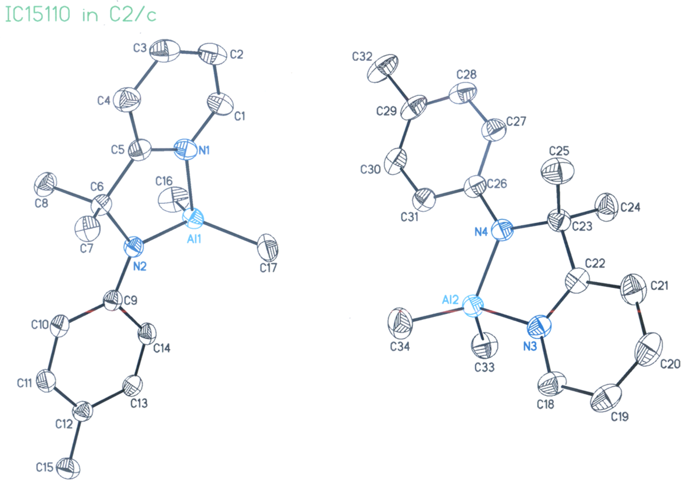

論文著作
學位論文
Complex Network Analysis, Spatiotemporal Big Data Analysis, Artificial Intelligence, Clinical Data Analysis, Social Media Behavior, Starch Chemistry
-
博士論文
詹竣翔 (2021) 全球航空聯盟網絡分析. 國立臺灣大學地理環境資源學系. [View Online]
 摘要: 自從1979年的美國以及1990年代的歐盟成員國家通過開放天空政策之後，造成航空產業的市場競爭以及經營模式有顯著性的變遷。許多航空公司加入航空聯盟以增加市場的競爭性，因此航空聯盟是由許多成員航空公司所組成，有共同的市場目標。機場的連結性在航空市場中扮演一個重要的角色，代表不同的航線可以連結不同地區市場。過去的機場網路文獻很少探討航空聯盟內部航空公司的合作關係以及航空聯盟之間成員航空公司競爭關係。因此本研究利用網絡分析來了解三大航空聯盟的航空聯盟機場網路的市場特徵，包括: 星空聯盟、天合聯盟以及寰宇一家。機場網絡群可利用其航點的空間分布定義出國內型與國際型機場網路群；同時國際型機場網路群可以用來評估航空聯盟內成員航空公司的合作程度。航空聯盟間的獨佔與競爭航線，可利用機場網絡群結構與航線分布計算出來。研究結果顯示星空聯盟的成員航空公司擁有最高的內部合作能力，並且在中美洲擁有一個國際型機場網路群。同時每一個航空聯盟都有各自獨佔航線，國際競爭航線主要分布在東亞、西亞、歐洲與北美洲；國內競爭航線則分布在美國、歐洲與東亞。研究發現可以應用於航空公司與航空聯盟，在建立新航線與選擇新成員航空公司時作為參考使用，以了解新航線與新成員航空公司對於整體航空聯盟機場網路的市場影響。
摘要: 自從1979年的美國以及1990年代的歐盟成員國家通過開放天空政策之後，造成航空產業的市場競爭以及經營模式有顯著性的變遷。許多航空公司加入航空聯盟以增加市場的競爭性，因此航空聯盟是由許多成員航空公司所組成，有共同的市場目標。機場的連結性在航空市場中扮演一個重要的角色，代表不同的航線可以連結不同地區市場。過去的機場網路文獻很少探討航空聯盟內部航空公司的合作關係以及航空聯盟之間成員航空公司競爭關係。因此本研究利用網絡分析來了解三大航空聯盟的航空聯盟機場網路的市場特徵，包括: 星空聯盟、天合聯盟以及寰宇一家。機場網絡群可利用其航點的空間分布定義出國內型與國際型機場網路群；同時國際型機場網路群可以用來評估航空聯盟內成員航空公司的合作程度。航空聯盟間的獨佔與競爭航線，可利用機場網絡群結構與航線分布計算出來。研究結果顯示星空聯盟的成員航空公司擁有最高的內部合作能力，並且在中美洲擁有一個國際型機場網路群。同時每一個航空聯盟都有各自獨佔航線，國際競爭航線主要分布在東亞、西亞、歐洲與北美洲；國內競爭航線則分布在美國、歐洲與東亞。研究發現可以應用於航空公司與航空聯盟，在建立新航線與選擇新成員航空公司時作為參考使用，以了解新航線與新成員航空公司對於整體航空聯盟機場網路的市場影響。
關鍵字: 航空聯盟機場網路, 機場網絡群, 市場特徵 -
碩士論文
詹竣翔 (2020) 探討超音波對於高直鏈玉米澱粉之物理特性與體外消化特性的影響. 實踐大學食品營養與保健生技學系. [View Online]
 摘要: 本研究使用超音波處理半糊化高直鏈玉米澱粉，觀察不同超音波處理時間(0、5、10、20、30分鐘)與不同處理溫度(50 ºC與 25 ºC)對於澱粉的表面型態、熱性質、小尺度分子排列結構、大尺度分子排列結構、直鏈/支鏈澱粉分子量分布、體外消化特性等，並結合主成分分析與多元變數回歸探討超音波對於高直鏈澱粉製備抗性澱粉與慢速消化澱粉之可能機制。由掃描式電子顯微鏡觀察發現，超音波破壞澱粉顆粒表面並產生許多空洞。從直鏈/支鏈澱粉分子量分布結果發現，超音波處理時間增加的時候會使得視直鏈澱粉含量增加。不同於過去文獻的研究成果，我們發現在小尺度與大尺度的分子排列結構皆隨著超音波處理時間愈長，且在超音波處理20分鐘時達到最高點。此結果也可以從體外消化實驗中獲得證明，半糊化後高直鏈玉米澱粉之超音波處理20分鐘，其抗性澱粉含量最高；然而，慢速消化澱粉的含量是隨著超音波處理時間增加而提高。從不同溫度和超音波處理對照組顯示，其超音波處理所帶來的體外消化等特性皆大於溫度效應所帶來的效果。最後，利用主成分分析縮減變數與多元變數回歸量化地呈現主要影響抗性澱粉與慢速消化澱粉的影響因子，並分別提出抗性澱粉與慢速消化澱粉的合成機制。冀望此研究成果和機制探討可導入於不同類型澱粉生成抗性澱粉與慢速消化澱粉之製備，進而可提升生產效率與達成永續生產的目的。
摘要: 本研究使用超音波處理半糊化高直鏈玉米澱粉，觀察不同超音波處理時間(0、5、10、20、30分鐘)與不同處理溫度(50 ºC與 25 ºC)對於澱粉的表面型態、熱性質、小尺度分子排列結構、大尺度分子排列結構、直鏈/支鏈澱粉分子量分布、體外消化特性等，並結合主成分分析與多元變數回歸探討超音波對於高直鏈澱粉製備抗性澱粉與慢速消化澱粉之可能機制。由掃描式電子顯微鏡觀察發現，超音波破壞澱粉顆粒表面並產生許多空洞。從直鏈/支鏈澱粉分子量分布結果發現，超音波處理時間增加的時候會使得視直鏈澱粉含量增加。不同於過去文獻的研究成果，我們發現在小尺度與大尺度的分子排列結構皆隨著超音波處理時間愈長，且在超音波處理20分鐘時達到最高點。此結果也可以從體外消化實驗中獲得證明，半糊化後高直鏈玉米澱粉之超音波處理20分鐘，其抗性澱粉含量最高；然而，慢速消化澱粉的含量是隨著超音波處理時間增加而提高。從不同溫度和超音波處理對照組顯示，其超音波處理所帶來的體外消化等特性皆大於溫度效應所帶來的效果。最後，利用主成分分析縮減變數與多元變數回歸量化地呈現主要影響抗性澱粉與慢速消化澱粉的影響因子，並分別提出抗性澱粉與慢速消化澱粉的合成機制。冀望此研究成果和機制探討可導入於不同類型澱粉生成抗性澱粉與慢速消化澱粉之製備，進而可提升生產效率與達成永續生產的目的。
關鍵字: 抗性澱粉, 半糊化處理, 高直鏈玉米澱粉, 超音波處理, 永續生產 -
碩士論文
詹竣翔 (2015) 應用超低頻電磁波遙測技術於地震前兆分析—以台灣為例. 國立臺灣大學地理環境資源學系. [View Online]
 摘要: 歷年來台灣曾多次遭受地震所帶來的災害，像芮氏規模7.3的1999年的921大地震造成2,415死亡及11,305受傷，進而造成土壤液化引發山崩及土流等災害，然而目前在地震預測及地震預警的工作仍有許多困難需要克服，相較於其他天然災害而言，地震預測的困難度較高，卻是急需克服的災害種類。 在學術上，目前常用地震預報的方法有電磁波訊號異常、Demeter微型衛星、動物集體行為異常現象、水氡異常以及水溫異常等，雖然監測的方法很多，然而在較少應用於實際層面之上。然而，不論是何種監測手法，目前大多數的文獻皆是做案例分析，且皆為事後分析地震的前兆特徵，進而歸納並推論地震來臨前可能的前兆特徵或是前兆訊號及頻率，在推估未來的部分較少著墨。 本研究利用現在已有進行預報的MDCB超低頻電磁波監測儀進行訊號分析工作，由於在時域空間的判釋較為困難且雜訊較多以至於難以辨別。因此本研究利用快速傅立葉轉換將資料由時域空間轉為頻率空間，並結合卷積及低通濾波器將雜訊濾除。在頻率空間的分析主要結合特徵分群的前兆訊號分析及歷史震央空間分析資料進行空間機率環域交匯分析震源深度機率分析。除此之外，利用前兆訊號數值與歷史地震資訊進行回歸分析，欲推估未來地震規模及震中距相關性，最後歸納前兆訊號特徵來推估未來地震可能發生時間。 根據以上所述的空間機率環域交匯分析、震源深度機率分析、地震規模及震中距迴歸分析及地震發生時間歸納分析進行地震前兆分析探究，希望以此分析系統增加現今地震前兆分析及地震預測的準確度，以減少災害所帶來的人才損失。
摘要: 歷年來台灣曾多次遭受地震所帶來的災害，像芮氏規模7.3的1999年的921大地震造成2,415死亡及11,305受傷，進而造成土壤液化引發山崩及土流等災害，然而目前在地震預測及地震預警的工作仍有許多困難需要克服，相較於其他天然災害而言，地震預測的困難度較高，卻是急需克服的災害種類。 在學術上，目前常用地震預報的方法有電磁波訊號異常、Demeter微型衛星、動物集體行為異常現象、水氡異常以及水溫異常等，雖然監測的方法很多，然而在較少應用於實際層面之上。然而，不論是何種監測手法，目前大多數的文獻皆是做案例分析，且皆為事後分析地震的前兆特徵，進而歸納並推論地震來臨前可能的前兆特徵或是前兆訊號及頻率，在推估未來的部分較少著墨。 本研究利用現在已有進行預報的MDCB超低頻電磁波監測儀進行訊號分析工作，由於在時域空間的判釋較為困難且雜訊較多以至於難以辨別。因此本研究利用快速傅立葉轉換將資料由時域空間轉為頻率空間，並結合卷積及低通濾波器將雜訊濾除。在頻率空間的分析主要結合特徵分群的前兆訊號分析及歷史震央空間分析資料進行空間機率環域交匯分析震源深度機率分析。除此之外，利用前兆訊號數值與歷史地震資訊進行回歸分析，欲推估未來地震規模及震中距相關性，最後歸納前兆訊號特徵來推估未來地震可能發生時間。 根據以上所述的空間機率環域交匯分析、震源深度機率分析、地震規模及震中距迴歸分析及地震發生時間歸納分析進行地震前兆分析探究，希望以此分析系統增加現今地震前兆分析及地震預測的準確度，以減少災害所帶來的人才損失。
關鍵字: 快速傅立葉轉換, 超低頻電磁波監測系統, 地震前兆分析 -
學士論文
詹竣翔 (2011) 土石流分群及其修正型臨界降雨線之建立. 國立臺北教育大學社會與區域發展學系.
 摘要: 隨著人類對於自然環境的破壞，環境變遷的議題也漸漸浮上檯面，然而在台灣的風災，水災逐年成長，且危害的程度也越來越高，風化作用中的侵蝕作用最為嚴重，例如:洪水所造成的邊坡侵蝕，土石流所帶來的大量土砂搬運，過程中掩埋及侵蝕周遭環境，可能引發後續的侵蝕作用，像地滑，或者是山崩都是有可能，因此我們如何去做到完善的預防及預測成為現在熱門的研究議題。 透過文獻內容以及實際防災體系，或是理論應用方面，我們不得不承認要讓這一類的自然災害做到百分之百的預防是超乎目前的技術，然而，我們可以透過不斷的改善以增加我們對於防災模型的準確度。在傳統的降雨資料，大部分是以鄰近的雨量觀測站做為觀測點，其降雨資料，諸如降雨強度，累積雨量，降雨延時等，皆是直接獲得且直接運用，然而現實層面來說，當距離遙遠時或是地勢，地形，地質條件等許多調查後差異性極大時，前面所利用的雨量資料變為不適用，因此，本研究的特色在於修正型的降雨資料庫製作土石流分群，再藉由支持向量機製成修正型臨界降雨線，最後再以MODEL BUILDER輸出模型，希望可以用將來的降雨資料套入其中，推估並進行半預測式的演算，得到較為精準的結果。
摘要: 隨著人類對於自然環境的破壞，環境變遷的議題也漸漸浮上檯面，然而在台灣的風災，水災逐年成長，且危害的程度也越來越高，風化作用中的侵蝕作用最為嚴重，例如:洪水所造成的邊坡侵蝕，土石流所帶來的大量土砂搬運，過程中掩埋及侵蝕周遭環境，可能引發後續的侵蝕作用，像地滑，或者是山崩都是有可能，因此我們如何去做到完善的預防及預測成為現在熱門的研究議題。 透過文獻內容以及實際防災體系，或是理論應用方面，我們不得不承認要讓這一類的自然災害做到百分之百的預防是超乎目前的技術，然而，我們可以透過不斷的改善以增加我們對於防災模型的準確度。在傳統的降雨資料，大部分是以鄰近的雨量觀測站做為觀測點，其降雨資料，諸如降雨強度，累積雨量，降雨延時等，皆是直接獲得且直接運用，然而現實層面來說，當距離遙遠時或是地勢，地形，地質條件等許多調查後差異性極大時，前面所利用的雨量資料變為不適用，因此，本研究的特色在於修正型的降雨資料庫製作土石流分群，再藉由支持向量機製成修正型臨界降雨線，最後再以MODEL BUILDER輸出模型，希望可以用將來的降雨資料套入其中，推估並進行半預測式的演算，得到較為精準的結果。
Keywords: 修正型臨界降雨量資料庫; 臨界降雨線; 支持向量機(Support Vector Machine); 遺傳演算法; Model Builder -
學士論文
詹竣翔 (2011) 有機鋁化合物之胺陰離子-吡啶雙牙配位基的電子效應及其催化環己內酯開環聚合反應的研究. 國立臺灣大學化學系.
摘要: 本研究從二零一零年六月開始進行一系列的實驗至二零一一年十月為止。一系列帶有不同取代基的甲苯胺陰離子-吡啶雙牙配位基之鋁錯合物以[(o-C5H4N)C(CH3)(R1)NR2]AlMe2 (R1 = H R2 = 2,6-iPr2C6H3 (C1a), R2 = 2,6-Me2C6H3 (C1b), R2 = Ph (C1c), R2 = p-MeC6H4 (C1d), R2 = p-ClC6H4 (C1e), R2 = p-FC6H4 (C1f) and R1 = Me C2a-C2f)的結構，發現能夠對內酯進行開環聚合反應。這一系列的衍生物經由核磁共振光譜和X-ray單晶解析得知其為扭曲的四角錐結構，並在沒有添加任何輔助的起始劑情況下，亦可以有效地活化環己內酯的開環聚合反應。從實驗結果可得知其聚合物的活性範圍介在2.6×10-1 ~ 1.3×103 g(PCL)/mol Al·h，而分子量範圍介在1.4×103 ~ 4.6×105，配位基的電子與立體障礙性質對聚合物的分子量與散佈趨勢有很明顯的影響。此外，若在有輔助性的起始劑情況下，整體的反應時間會大為縮小，並獲得良好的分子量以及均勻的分子量分布結果。本研究以Hammett plot來探討電子效應影響，並輔以聚合物的核磁共振光譜和質譜鑑定來討論其反應機構。雖然大部分的反應機構較不能完整驗證，但引述前人研究之結果，其反應機構應經由胺陰離子開環而起始反應。
關鍵字: 甲苯胺陰離子-吡啶雙牙配位基, 有機鋁錯合物, 開環聚合反應